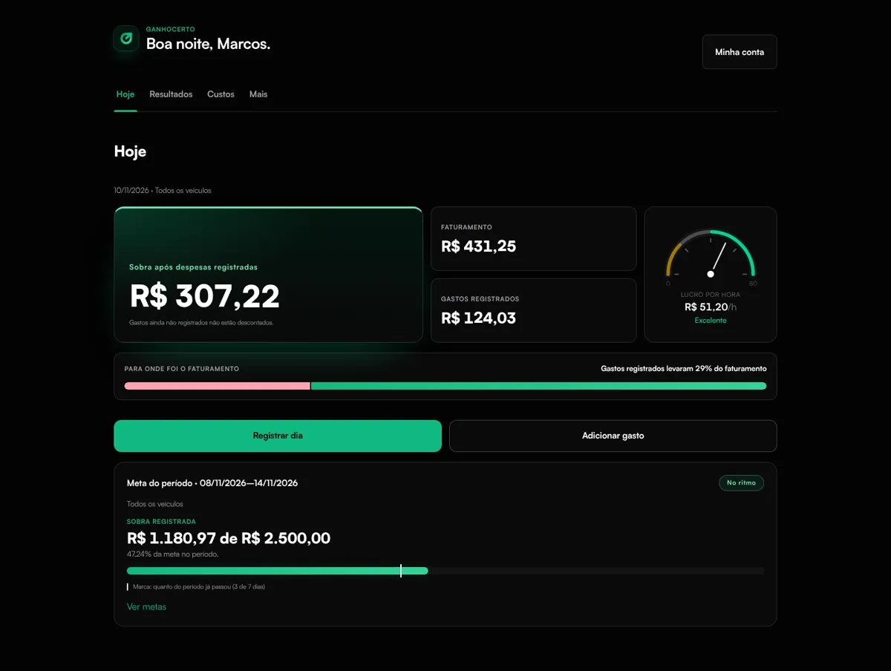
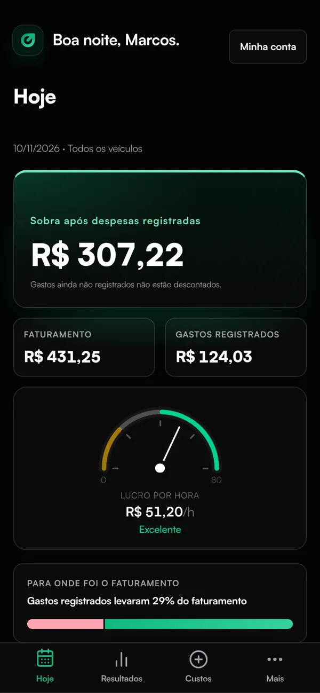

Dados PostgreSQL · SQLAlchemy · Alembic
- users
- vehicles
- work_sessions
- expenses
- financial_goals
- subscriptions
API FastAPI
- POST
/auth/login - POST
/work-sessions - GET
/financial-summary - GET
/financial-goals/{id}/progress

Interface React · TypeScriptFintech para motoristas de aplicativo
Ganho Certo
O motorista vê o faturamento do dia, mas não sabe quanto sobra depois de combustível, manutenção e desgaste.
Um produto completo com contas, planos e cobrança: o motorista lança o dia em segundos e vê o lucro real por hora, por quilômetro e na meta da semana.
O que construí
- Contas com login, redefinição de senha e dados isolados por usuário
- Jornadas, despesas, veículos e um perfil de custos por quilômetro
- Resumo financeiro, metas com ritmo, histórico e padrões por dia da semana
- Importação de CSV com perfis de colunas reaproveitáveis
- Planos gratuito e Pro com limites por plano e checkout
Decisões que fazem diferença
- Dinheiro sem float
- Valores monetários trafegam como decimais exatos, nunca como ponto flutuante.
- Usuário vem do token
- O backend deriva o user_id da autenticação; o frontend nunca escolhe de quem são os dados.
- 516 testes automatizados
- 303 no backend, 213 no frontend
- 4 checagens no CI
- ruff, mypy, pytest e build
Tecnologias
